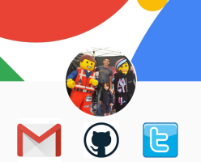
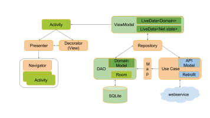

Mobile Application Development
David Drohan
,
Eamonn de Leastar
&
John Fitzgerald
,
WIT
Assignment
Module Overview & Background

1: Android Overview & Tools
2: UI Design & App Structure
3: Data Persistence in Android

4: Multithreading & Networking
5: Google Services
6: Firebase
7: Supplementary Material